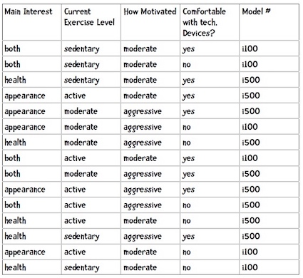

面向程序员的数据挖掘指南 - 5 朴素贝叶斯¶
1 朴素贝叶斯¶
使用近邻算法时，我们很难对分类结果的置信度进行量化。但如果使用的是基于概率的分类算法——贝叶斯算法——那就可以给出分类结果的可能性了：这名运动员有80%的几率是篮球运动员。
近邻算法又称为被动学习算法。这种算法只是将训练集的数据保存起来，在收到测试数据时才会进行计算。如果我们有10万首音乐，那每进行一次分类，都需要遍历这10万条记录才行。
贝叶斯算法则是一种主动学习算法。它会根据训练集构建起一个模型，并用这个模型来对新的记录进行分类，因此速度会快很多。
贝叶斯算法的两个优点即：
- 能够给出分类结果的置信度；
- 它是一种主动学习算法。
概率¶
我们用P(h|D)来表示D条件下事件h发生的概率。P(h)表示事件h发生的概率，称为h的先验概率。P(h|d)称为后验概率，表示在观察了数据集d之后，h事件发生的概率是多少。后验概率又称为条件概率。
贝叶斯法则¶
贝叶斯法则描述了P(h)、P(h|D)、P(D)、以及P(D|h)这四个概率之间的关系：
如果我们有h_1, h_2,...h_n等事件。计算不同事件发生的概率，
选取最大的概率，就能用作分类了。这种方法叫最大后验估计，记为h_{MAP}：
H表示所有的事件，所以h\in H表示“对于集合中的每一个事件”。整个公式的含义就是：对于集合中的每一个事件，计算出P(h|D)的值，并取最大的结果。
可以发现对于所有的事件，公式中的分母都是P(D)，因此即便只计算P(D|h)P(h)，也可以判断出最大的结果。那么这个公式就可以简化为：
2 Example: 手环推荐¶
现在我们要为iHealth公司发一套推荐系统。iHealth新出产了两件商品：i100和i500。为了收集数据，让购买的用户填写调查问卷，每个问题都对应一个特征：

已知一位客户的运动目的、当前运动水平、对健身的热情、是否适应高科技产品，请用朴素贝叶斯来推荐手环型号。
朴素贝叶斯分类器包含两个部分：训练和分类。
训练¶
训练的输出结果应该是：
- 先验概率，如P(i100) = 0.4
- 条件概率，如P(健康|i100) = 0.167
我们使用如下代码表示先验概率：
self.prior = {'i500': 0.6, 'i100': 0.4}
条件概率的表示有些复杂，用嵌套的字典来实现：
{'i500': {1: {'appearance': 0.3333333333333333, 'health': 0.4444444444444444, 'both': 0.2222222222222222}, 2: {'active': 0.4444444444444444, 'sedentary': 0.2222222222222222, 'moderate': 0.3333333333333333}, 3: {'aggressive': 0.6666666666666666, 'moderate': 0.3333333333333333}, 4: {'yes': 0.6666666666666666, 'no': 0.3333333333333333}}, 'i100': {1: {'both': 0.5, 'health': 0.16666666666666666, 'appearance': 0.3333333333333333}, 2: {'active': 0.3333333333333333, 'sedentary': 0.5, 'moderate': 0.16666666666666666}, 3: {'aggressive': 0.16666666666666666, 'moderate': 0.8333333333333334}, 4: {'yes': 0.3333333333333333, 'no': 0.6666666666666666}}}
1、2、3、4表示第几列，所以第一行可以解释为购买i500的顾客中运动目的是外表的概率是 0.333。
为了计算概率，要进行计数，可以用字典来统计每个型号的次数。
以下是训练用的Python代码：
class WristBandBayes: """ Recoommand Writeband Using naive bayes """ def __init__(self, bucketPrefix, testBucketNumber, dataFormat): """ :param bucketPrefix: 分桶数据集文件前缀 :param testBucketNumber: 测试桶的编号 :param dataFormat: 数据格式，形如attr attr attr attr class """ # 总条数 total = 0 # 先验概率计数 classes = {} # 后验概率计数 counts = {} # 从文件中读取数据 self.format = dataFormat.strip().split('\t') # 先验概率 self.prior = {} # 条件概率 self.conditional = {} # 遍历十个桶， 十折交叉验证 for i in range(1, 11): # 跳过测试桶 if i != testBucketNumber: filename = "%s-%02i" % (bucketPrefix, i) f = open(filename) lines = f.readlines() f.close() for line in lines: fields = line.strip().split('\t') ignore = [] vector = [] for i in range(len(fields)): if self.format[i] == 'num': vector.append(float(fields[i])) elif self.format[i] == 'attr': vector.append(fields[i]) elif self.format[i] == 'comment': ignore.append(fields[i]) elif self.format[i] == 'class': category = fields[i] # 处理该条记录 total += 1 classes.setdefault(category, 0) counts.setdefault(category, {}) classes[category] += 1 # 处理各个属性 col = 0 for columnValue in vector: col += 1 counts[category].setdefault(col, {}) counts[category][col].setdefault(columnValue, 0) counts[category][col][columnValue] += 1 # 计数结束，开始计算概率 # 计算先验概率P(h) for (category, count) in classes.items(): self.prior[category] = count / total # 计算条件概率P(h|D) for (category, columns) in counts.items(): self.conditional.setdefault(category, {}) for (col_id, valueCounts) in columns.items(): self.conditional[category].setdefault(col_id, {}) for (attrValue, count) in valueCounts.items(): self.conditional[category][col_id][attrValue] = ( count / classes[category]) self.tmp = counts def classify(self, itemVector): """ 返回itemVector所属类别 """ results = [] for (category, prior) in self.prior.items(): prob = prior col = 1 for attrValue in itemVector: if attrValue not in self.conditional[category][col]: # 属性不存在，返回0概率 prob = 0 else: prob = prob * self.conditional[category][col][attrValue] col += 1 results.append((prob, category)) # 返回概率最高的结果 return max(results)[1] if __name__ == "__main__": c = WristBandBayes('/Users/larry/datamining/DataminingGuideBook-Codes/chapter-6/iHealth/i', 10, 'attr\tattr\tattr\tattr\tclass') print(c.classify(['health' 'moderate', 'moderate', 'yes']))
3 Example: 美国国会投票数据¶
美国国会投票数据，其中每条记录代表一个选民，第一列是分类名称（democrat, republican），之后是16条法案，用y和n表示该人是否支持。
文件格式如下：
democrat y n y n n y y y y y n n y n n y democrat y y y n n y y y y n n n n n y y republican y y n y y y n n n y n y y y n n
在调用上一节编写的朴素贝叶斯分类器时使用以下dataFormat参数就可以了：
"class\tattr\tattr\tattr\tattr\tattr\tattr\tattr\tattr\tattr\tattr\tattr\tattr\tattr\t attr\tattr\tattr"
概率值为0¶
但是，这个方法有一些问题。
使用朴素贝叶斯计算得到的概率其实是真实概率的一种估计，而真实概率是对全量数据做统计得到的。比如说，我们需要对所有人都做血液测试，才能得到健康人返回阴性结果的真实概率。显然，对全量数据做统计是不现实的，所以我们会选取一个样本，如1000人，对他们进行测试并计算概率。大部分情况下，这种估计都是接近于真实概率的。但当真实概率非常小时，这种抽样统计的做法就会有问题了。比如说，民主党对网络非法传播法案的否决率是0.03，即P(S=no|民主党) = 0.03。如果我们 分别选取十个民主党和共和党人，看他们对该法案的投票情况，你觉得得到的概率会是什么？答案很可能是0。
在朴素贝叶斯中，概率为0的影响是很大的。如果其中⼀个概率值为0，那么最后的乘积也为0。
为了表示方便，我们采用以下公式： P(x|y)=\frac{n_c}{n}
其中,n表示训练集中y类别的记录数；n_c表示y类别中值为x的记录数。我们的问题是n_c可能为0。解决方法是将公示变为以下形式：
m是一个常数，表示等效样本大小。决定常数m的方法有很多，我们这里使用值的类别数目来作为m，比如投票有赞成和否决两种类别，所以m就为2。p则是相应的先验概率，比如说赞成和否决的概率分别是0.5，那p就是0.5。
数值型数据¶
在贝叶斯方法中，之前我们对事物进行了计数，这种计数则是可以度量的。对于数值型的数据要 如何计数呢？通常有两种做法：区分类别和高斯分布
区分类别¶
我们可以划定几个范围作为分类，如：
- 年龄
- < 18
- 18 - 22
- 23 - 30
- 31 - 40
- 40
- 年薪
- $200,000
- 150,000 - 200,000
- 100,000 - 150,000
- 60,000 - 100,000
- 40,000 - 60,000
划分类别后，就可以应用朴素贝叶斯方法了。
高斯分布¶
属于类别y_i的特征x_i的概率为
为了举例，我们为上面讲述的手环的例子增加一列收入属性。假设我们要计算P(100k|i500)的概率，即购买i500的用户中收入是100,000美元的概率。那么u_{ij}, \sigma_{ij}分别是购买i500的用户的平均收入和收入的标准差。
样本标准差的计算公式是：
在训练朴素贝叶斯分类器时，可以将所有属性的平均值和样本标准差计算出来，而分类阶段使用平均值和样本标准差计算概率密度分布：
def pdf(mean, ssd, x): """概率密度函数，计算P(x|y)""" ePart = math.pow(math.e, -(x - mean) ** 2 / (2 * ssd ** 2)) return (1.0 / (math.sqrt(2 * math.pi) * ssd)) * ePart